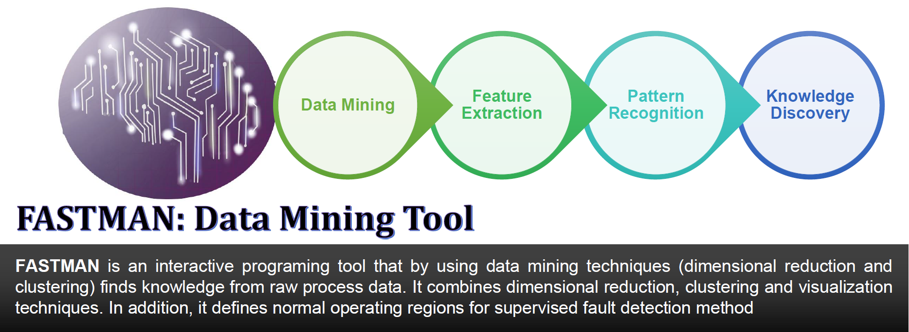
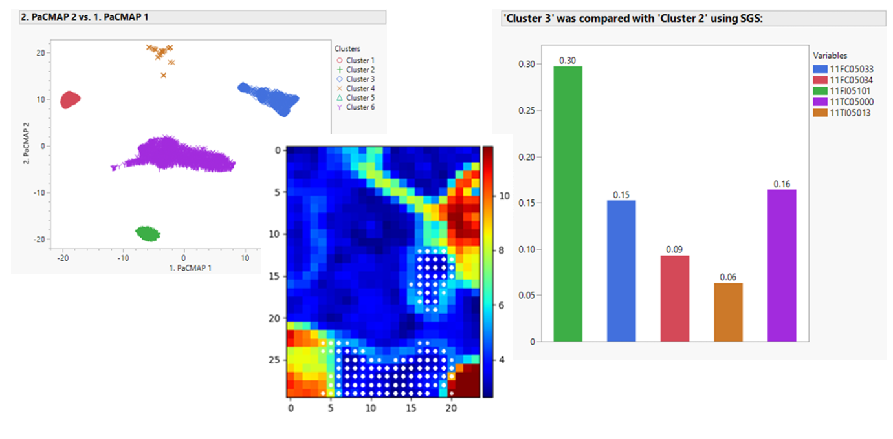

Overview
FastMAN Framework
FastMAN is a user-friendly software tool designed to streamline the pipeline of preprocessing and analyzing large datasets. It provides a flexible interface for non-experts to utilize state-of-the-art machine learning techniques for to gain key insights from their data. These could range from identifying faulty operating conditions in large-scale systems like chemical refineries to uncovering groups of structurally similar molecules at the molecular level.
FastMAN is built as an add-in for JMP, a widely used data analysis software in engineering. We also have a Python version of FastMAN in development.

Capabilities
Dimensionality Reduction & Clustering, Feature Contribution, and more!
FastMAN provides a suite of tools for dimensionality reduction sucha as PCA, UMAP, and PaCMAP. These techniques can help users visualize and understand the structure of their data by going from a high-dimensional space to a 2 or 3-dimensional space.
There are also clustering options such as K-means and HDBSCAN to help users identify groups of similar data points in the lower dimentional space.
FastMAN also has tools for feature contribtion analysis, self-organized mappings, sensitivity analysis, and more!

Applications
Using FastMan for Process Monitoring
By studying historical process data at chemical plants, FastMAN can help identify patterns of normal and abnormal operation. By utilizing these learned labels, models can be formed and real-time monitoring tools for fault detection and diagnosis can be utilized.
What if I do not have process data?
FastMAN is not limited to process data.
The software can be applied to any large dataset. An example alternate use case includes studying molecular datasets where it can help identify groups of structurally similar molecules and key features that contribute to their similarity.